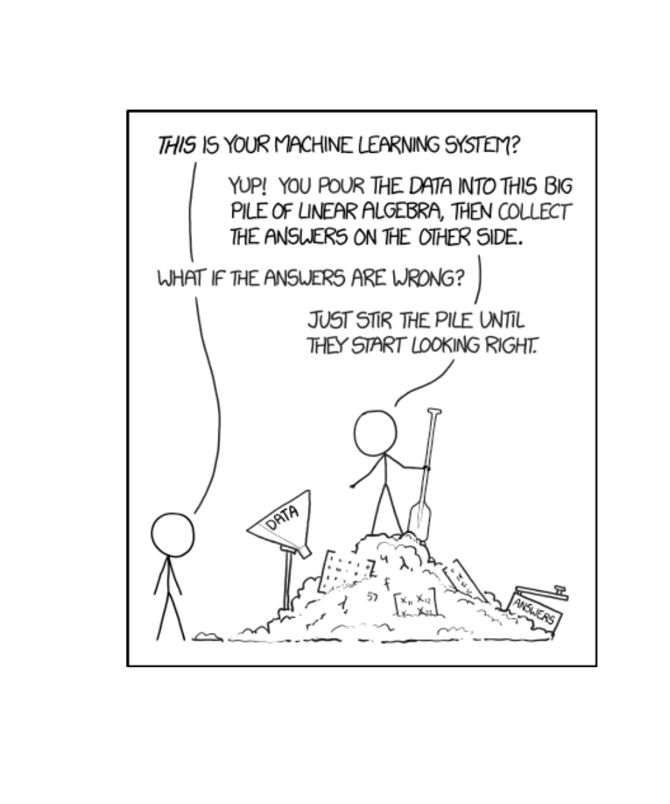
Lesson 25: Trees and Random Forest
Calendar
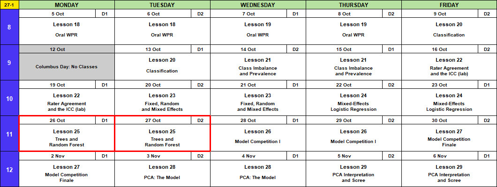
Admin
This Lesson
The Next Few Classes
- Come into Lesson 26 (A1, BC1 Wed 28 Oct; BC2 Thu 29 Oct) with:
- A laptop with
lme4andrandomForestinstalled - Both Memo 4 data files downloaded: ma376_leads_m4.csv (12,000 leads, outcomes known) and ma376_leads_score.csv (3,900 incoming, no outcomes)
- A laptop with
- In class, with your team:
- Fit three models on the Memo 4 leads: logistic regression (I’ll give you starter code), mixed-effects logistic, random forest
- Upload each model’s predictions. See your score on the leaderboard.
- Before Lesson 27 (BC2 Fri 30 Oct; A1, BC1 Mon 2 Nov):
- Study for the Block 3 quiz, in class at Lesson 27 (Lessons 20 to 23)
- Memo 4: due Monday 2 November, every section (tasking, data description)
- Hard copy by 1600, in class or at my office, TH239B
Coming Up
- Capstone Milestone 2: methodology and preliminary results. Due 2359 Friday 13 November, 60 points.
- 2 to 4 pages that motivate and defend your method, with a short look at results
- A plebe in MA103 should understand at least 80% of it
- Capstone final presentation. Lessons 37 and 38, 3 to 8 December, 100 points.
- I’m here through Lesson 29, 6 November.
TEE Slots
All TEE periods run 0730 to 1100. Find your name under your section.
NoteMA376 A1 14 (15 cadets)
| P1: Tue 15 Dec (8) | P4: Wed 16 Dec (7) |
|---|---|
| Anteen | Baron |
| Carroll | Fountain |
| Cole | Hardwick |
| Fonte | Rebolledo |
| Konopka | Shioutakon |
| Ploetz | Smith |
| Sun | Youmans |
| Toth |
NoteMA376 BC1 15 (14 cadets)
| P1: Tue 15 Dec (5) | P4: Wed 16 Dec (9) |
|---|---|
| Bode | Best |
| Lee | De La Torre |
| Ndiaye | Laub |
| O’Keefe | Loughman |
| Russell | Miranda |
| Nguyen | |
| Plummer | |
| Ward | |
| Weisenborn |
NoteMA376 BC2 16 (15 cadets)
| P1: Tue 15 Dec (4) | P4: Wed 16 Dec (11) |
|---|---|
| Gray | Applegate |
| Harris | Cannon |
| Van Kley | Ivey |
| Zhai | Johnson |
| Kendig | |
| Marino | |
| Myers | |
| Silverman | |
| Song | |
| Tullier | |
| Wittrock |
Break!
What We Did: Lessons 20 to 24
NoteReview: Judging a Classifier (Lesson 20)
| Truth positive | Truth negative | |
|---|---|---|
| Predicted positive | TP | FP, a false alarm |
| Predicted negative | FN, a miss | TN |
- Accuracy \(= \dfrac{TP + TN}{n}\)
- Sensitivity (recall) \(= \dfrac{TP}{TP + FN}\), specificity \(= \dfrac{TN}{TN + FP}\)
- Precision \(= \dfrac{TP}{TP + FP}\)
- \(F_1 = \dfrac{2\,TP}{2\,TP + FP + FN}\)
- Cut probabilities into labels at a threshold. \(0.5\) is a default, not a rule.
NoteReview: Class Imbalance and Prevalence (Lesson 21)
- Rare outcome: the null classifier scores \(1 - \text{prevalence}\), and a \(0.5\) threshold flags almost nothing.
- Three fixes: move the threshold, class weights (
glm(..., weights = w)), undersample. Each one moves the cutoff. None improves the model. - Sensitivity and specificity do not move with prevalence. Precision does.
- Report performance with the prevalence it was measured at.
NoteReview: Rater Agreement and the ICC (Lesson 22)
- Percent agreement \(p_o\). Chance agreement \(p_e = P(A)P(B) + P(A^c)P(B^c)\)
- Cohen’s kappa \(\kappa = \dfrac{p_o - p_e}{1 - p_e}\): agreement once you remove chance. Falls as prevalence moves to an extreme.
- \(\text{PABAK} = 2p_o - 1\): kappa with the prevalence set at half
- ICC \(= \dfrac{\hat\sigma^2_{\text{subject}}}{\hat\sigma^2_{\text{subject}} + \hat\sigma^2_{\text{rater}} + \hat\sigma^2_{\text{error}}}\), from a two-way ANOVA with raters as blocks
- Reliability is not validity: raters can agree and all be wrong.
NoteReview: Fixed, Random and Mixed Effects (Lesson 23)
- \(y_{ij} = \mu + u_j + \varepsilon_{ij}\), \(u_j \sim N(0, \sigma^2_u)\), \(\varepsilon_{ij} \sim N(0, \sigma^2)\)
lmer(y ~ 1 + (1 | group), data = d), thenfixef(),ranef(),coef()- \(\hat y_{ij} = \hat\mu + w_j(\bar y_j - \hat\mu)\), \(w_j = \dfrac{n_j}{n_j + \lambda}\), \(\lambda = \dfrac{\hat\sigma^2}{\hat\sigma^2_u}\): small groups shrink toward the average
- \(\text{ICC} = \dfrac{\hat\sigma^2_u}{\hat\sigma^2_u + \hat\sigma^2}\)
- Fixed: these levels are all you care about. Random: the levels are a sample of many.
NoteReview: Mixed-Effects Logistic Regression (Lesson 24)
- \(\log\dfrac{p_{ij}}{1 - p_{ij}} = \mu + u_j\), \(u_j \sim N(0, \sigma^2_u)\). No \(\varepsilon\): pass or fail is the noise.
glmer(y ~ x + (1 | group), family = binomial, data = d)predict(fit, newdata, type = "response", allow.new.levels = TRUE)glmwith a dummy per group: a group at 100% gets \(\hat\beta \to \infty\).glmershrinks it.- \(\text{ICC} = \dfrac{\hat\sigma^2_u}{\hat\sigma^2_u + \pi^2/3}\)
What We’re Doing: Lesson 25
What Our Models Can’t Do
Linear regression (Lesson 6), logistic regression (Lesson 9), mixed models (Lessons 23 and 24):
- Don’t handle complex interactions well. You have to guess them and write them in.
- Don’t handle thresholds well. One straight-line effect per predictor.
- Don’t handle extreme values well. One point pulls the whole line.
- Rely on a lot of assumptions: linear in the logit, independence.
- Break when a group is all one outcome (\(\hat\beta \to \infty\), Lesson 24).
Tree-based models handle all of this.
Who Will Pass the IOCT?
Same test, now one row per cadet. Last year’s 2,100 cadets have results. This year’s 900 take the IOCT next month.
Goal: predict which of this year’s cadets will pass.
class_year: plebe, yuk, cow, firstieheight_in,weight_lbpullups,run_min(two-mile run),plank_secpass: 1 = passed, 0 = failedset:train(last year) ortest(this year)
library(tidyverse)
ioct <- read_csv("data/L25_ioct_cadets.csv", show_col_types = FALSE) |>
mutate(pass = factor(pass),
class_year = factor(class_year))
head(ioct)# A tibble: 6 × 9
cadet set class_year height_in weight_lb pullups run_min plank_sec pass
<chr> <chr> <fct> <dbl> <dbl> <dbl> <dbl> <dbl> <fct>
1 C0001 train cow 70 144 11 11.7 146 1
2 C0002 train plebe 66 159 0 16 196 0
3 C0003 train firstie 66 152 8 11.5 160 1
4 C0004 train firstie 73 178 2 15.3 177 0
5 C0005 train plebe 69 195 0 16.5 166 0
6 C0006 train plebe 63 135 11 12.5 236 0 train <- ioct |> filter(set == "train") |> select(-cadet, -set)
test <- ioct |> filter(set == "test") |> select(-cadet, -set)
train |> count(pass)# A tibble: 2 × 2
pass n
<fct> <int>
1 0 877
2 1 1223Fit on train. Score on test, with Lesson 20’s metrics:
library(yardstick)
ioct_metrics <- metric_set(accuracy, sensitivity, precision, f_meas)event_level = "second" below: 1 is the second level of pass, and it’s the one we’re predicting.
What We Know: Logistic Regression
fit_logit <- glm(pass ~ ., family = binomial, data = train)
results_logit <- test |>
mutate(prob = predict(fit_logit, test, type = "response"),
pred = factor(if_else(prob > 0.5, 1, 0), levels = c(0, 1)))
results_logit |> conf_mat(truth = pass, estimate = pred) Truth
Prediction 0 1
0 230 101
1 167 402scoreboard <- results_logit |>
ioct_metrics(truth = pass, estimate = pred, event_level = "second") |>
mutate(model = "logistic")
scoreboard |> select(model, .metric, .estimate) |> pivot_wider(names_from = .metric, values_from = .estimate)# A tibble: 1 × 5
model accuracy sensitivity precision f_meas
<chr> <dbl> <dbl> <dbl> <dbl>
1 logistic 0.702 0.799 0.707 0.75- \(F_1 = 0.750\). It finds 80% of the cadets who pass.
- Height gets one slope. Very short and very tall cadets can’t both fail more.
Introducing Decision Trees
A classification tree asks yes/no questions and sorts every cadet into a box. The smallest tree asks one question.
library(rpart); library(rpart.plot)
fit_stump <- rpart(pass ~ ., data = train, method = "class", maxdepth = 1) # one splitrpart.plot(fit_stump, extra = 106)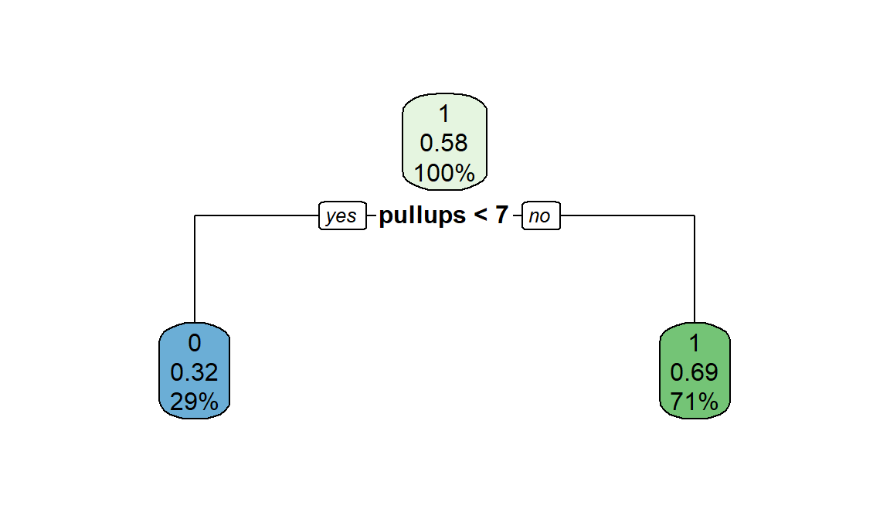
Each box has three rows:
- Top: the prediction, 1 = pass or 0 = fail. Whichever is more common in the box.
- Middle: the proportion of
traincadets in the box who passed. - Bottom: the percent of all
traincadets who land in the box.
Read it down: yes goes left.
Score it. Every test cadet with 7 or more pull-ups gets a 1:
results_stump <- test |> mutate(pred = predict(fit_stump, test, type = "class"))
results_stump |> conf_mat(truth = pass, estimate = pred) Truth
Prediction 0 1
0 191 71
1 206 432scoreboard <- scoreboard |>
bind_rows(results_stump |> ioct_metrics(truth = pass, estimate = pred, event_level = "second") |> mutate(model = "one split"))
scoreboard |> select(model, .metric, .estimate) |> pivot_wider(names_from = .metric, values_from = .estimate)# A tibble: 2 × 5
model accuracy sensitivity precision f_meas
<chr> <dbl> <dbl> <dbl> <dbl>
1 logistic 0.702 0.799 0.707 0.75
2 one split 0.692 0.859 0.677 0.757- Correct: the diagonal, 191 + 432 = 623 of 900.
- \(F_1 = 0.757\) from one question. Logistic, with every predictor, gets about the same: 0.750.
Where the Split Comes From
Why pull-ups, and why 6.5? The tree picks the split that leaves the boxes least mixed.
Gini impurity measures how mixed a box is: passers and failers together. For a box where a share \(p\) passed:
\[G = 2p(1 - p)\]
- Low, \(G = 0\): everyone in the box passed, or everyone failed.
- High, \(G = 0.5\): half passed, half failed.
A split makes two boxes. Its \(G\) is the average of the two, weighted by how many cadets land in each. The tree tries every cut of every predictor and keeps the one with the lowest \(G\):
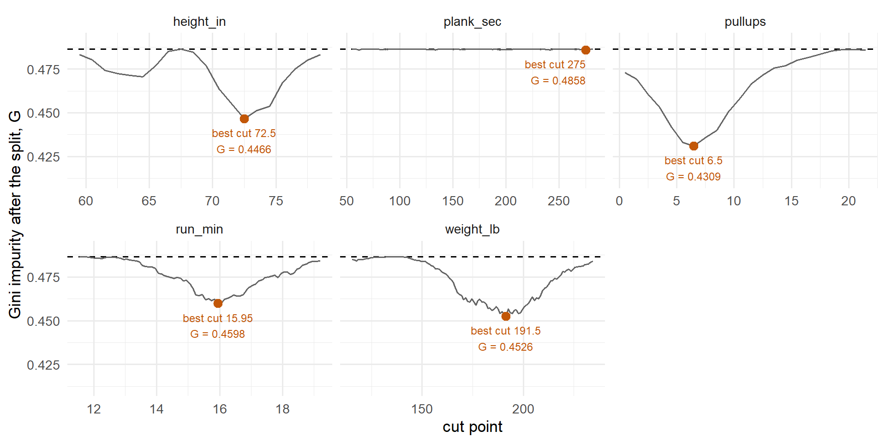
- Dashed line: \(G\) before any split, 0.4864.
- The orange point is each predictor’s best cut. The lowest one wins: pull-ups at 6.5, \(G\) = 0.4309. The tree plot shows it as
pullups >= 7, the same cut, since pull-ups are whole numbers. plank_sechugs the dashed line. No cut sorts passers from failers.
The Second Split
The same search again, inside each box: every predictor, every cut, using only the cadets in that box.
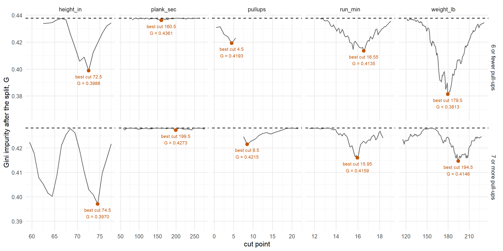
- Top row: the 615 cadets with 6 or fewer pull-ups. Bottom row: the 1,485 with 7 or more. Dashed line: that box’s \(G\) before it splits.
- 7 or more: the best cut is height at 74.5. Under 75 inches, 72% pass. 75 or taller, 13%. The tall cadets flip from a 1 to a 0, so the tree keeps it.
- 6 or fewer: the best cut is weight at 179.5. But both sides still mostly fail (47% and 14% pass), so every cadet still gets a 0. It fixes no mistakes, so
rpartdrops it here.
fit_two <- rpart(pass ~ ., data = train, method = "class", maxdepth = 2) # two levels of questionsrpart.plot(fit_two, extra = 106)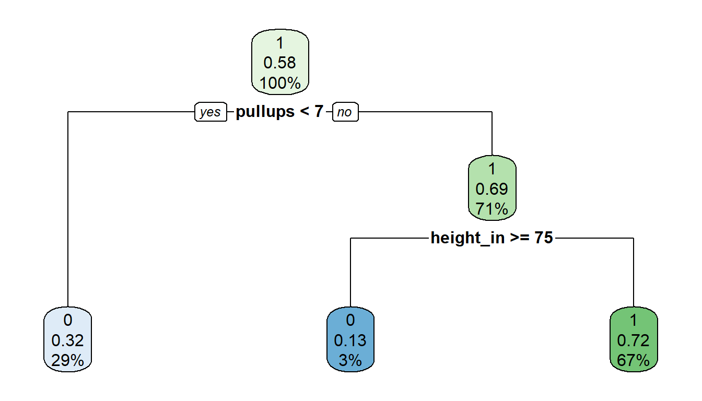
- Top: the prediction, 1 = pass or 0 = fail.
- Middle: the proportion of
traincadets in the box who passed. - Bottom: the percent of all
traincadets who land in the box.
results_two <- test |> mutate(pred = predict(fit_two, test, type = "class"))
scoreboard <- scoreboard |>
bind_rows(results_two |> ioct_metrics(truth = pass, estimate = pred, event_level = "second") |> mutate(model = "two splits"))
scoreboard |> select(model, .metric, .estimate) |> pivot_wider(names_from = .metric, values_from = .estimate)# A tibble: 3 × 5
model accuracy sensitivity precision f_meas
<chr> <dbl> <dbl> <dbl> <dbl>
1 logistic 0.702 0.799 0.707 0.75
2 one split 0.692 0.859 0.677 0.757
3 two splits 0.717 0.845 0.706 0.769\(F_1 = 0.769\), up from one split’s 0.757.
Three Splits
One more level, for good measure. The same search inside the two 7 or more boxes:
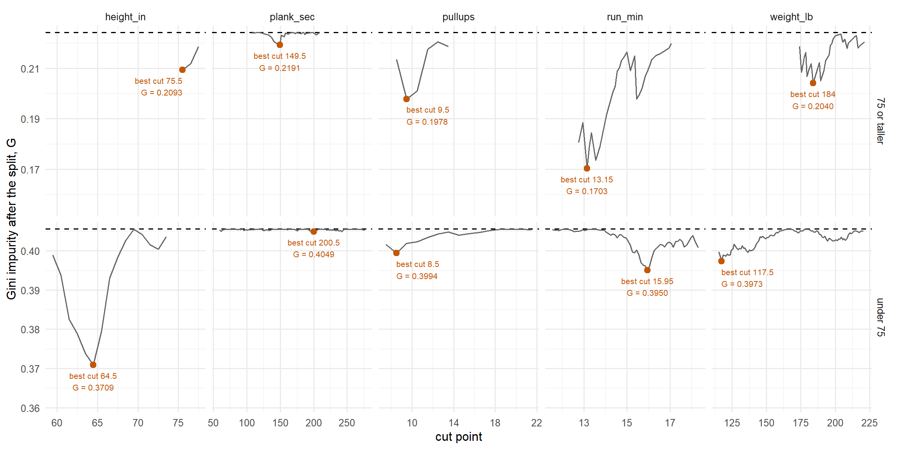
- Top row: the 70 cadets with 7 or more pull-ups, 75 inches or taller. Bottom row: the 1,415 under 75 inches.
- Under 75: the best cut is height at 64.5. 64 inches or shorter, 35% pass, so they flip from a 1 to a 0. The tree keeps it.
- 75 or taller: the best cut is run time at 13.15. The 9 fast runners pass 56% and would flip to a 1, but that fixes one mistake. Too small to keep, so
rpartdrops it. - 6 or fewer: still no split.
fit_three <- rpart(pass ~ ., data = train, method = "class", maxdepth = 3) # three levels of questions
rpart.plot(fit_three, extra = 106)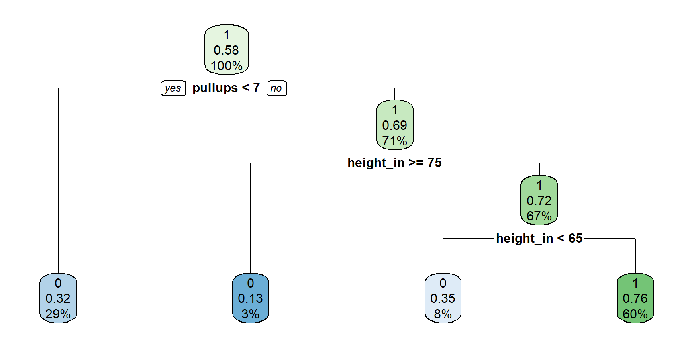
results_three <- test |> mutate(pred = predict(fit_three, test, type = "class"))
scoreboard <- scoreboard |>
bind_rows(results_three |> ioct_metrics(truth = pass, estimate = pred, event_level = "second") |> mutate(model = "three splits"))
scoreboard |> select(model, .metric, .estimate) |> pivot_wider(names_from = .metric, values_from = .estimate)# A tibble: 4 × 5
model accuracy sensitivity precision f_meas
<chr> <dbl> <dbl> <dbl> <dbl>
1 logistic 0.702 0.799 0.707 0.75
2 one split 0.692 0.859 0.677 0.757
3 two splits 0.717 0.845 0.706 0.769
4 three splits 0.741 0.791 0.757 0.774Let It Run: If Three Is Good, More Is Better!
Keep asking until every box is pure. No limits:
fit_big <- rpart(pass ~ ., data = train, method = "class", cp = 0, minsplit = 2)
sum(fit_big$frame$var != "<leaf>") # number of splits[1] 478rpart.plot(fit_big, type = 0, extra = 0, tweak = 0.5) # too many boxes to label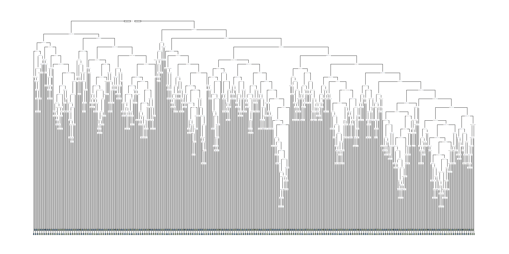
On last year’s cadets, the ones it learned from:
train |> mutate(pred = predict(fit_big, train, type = "class")) |> accuracy(truth = pass, estimate = pred)# A tibble: 1 × 3
.metric .estimator .estimate
<chr> <chr> <dbl>
1 accuracy binary 1100% right. What could be wrong with this?
On this year’s cadets:
results_big <- test |> mutate(pred = predict(fit_big, test, type = "class"))
scoreboard <- scoreboard |>
bind_rows(results_big |> ioct_metrics(truth = pass, estimate = pred, event_level = "second") |> mutate(model = "no limits"))
scoreboard |> select(model, .metric, .estimate) |> pivot_wider(names_from = .metric, values_from = .estimate)# A tibble: 5 × 5
model accuracy sensitivity precision f_meas
<chr> <dbl> <dbl> <dbl> <dbl>
1 logistic 0.702 0.799 0.707 0.75
2 one split 0.692 0.859 0.677 0.757
3 two splits 0.717 0.845 0.706 0.769
4 three splits 0.741 0.791 0.757 0.774
5 no limits 0.662 0.688 0.702 0.695Overfitting. It memorized last year’s cadets, and it does not predict well out of sample.
Limiting the Tree
Stop the tree before it memorizes. Three knobs in rpart:
cp: a split must cut the error by at least this share. Default0.01, 1%.minsplit: a box needs this many cadets to split. Default20.maxdepth: at most this many levels of questions. Default30.
The defaults:
fit_tree <- rpart(pass ~ ., data = train, method = "class")rpart.plot(fit_tree, extra = 106)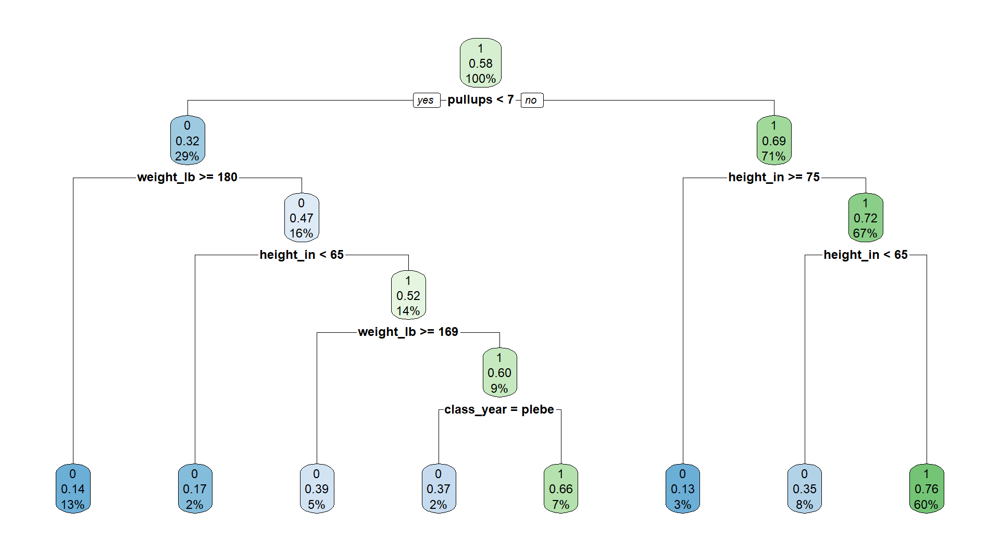
results_tree <- test |> mutate(pred = predict(fit_tree, test, type = "class"))
results_tree |> conf_mat(truth = pass, estimate = pred) Truth
Prediction 0 1
0 240 80
1 157 423scoreboard <- scoreboard |>
bind_rows(results_tree |> ioct_metrics(truth = pass, estimate = pred, event_level = "second") |> mutate(model = "limited tree"))
scoreboard |> select(model, .metric, .estimate) |> pivot_wider(names_from = .metric, values_from = .estimate)# A tibble: 6 × 5
model accuracy sensitivity precision f_meas
<chr> <dbl> <dbl> <dbl> <dbl>
1 logistic 0.702 0.799 0.707 0.75
2 one split 0.692 0.859 0.677 0.757
3 two splits 0.717 0.845 0.706 0.769
4 three splits 0.741 0.791 0.757 0.774
5 no limits 0.662 0.688 0.702 0.695
6 limited tree 0.737 0.841 0.729 0.781- 8 boxes. \(F_1 = 0.781\): better than one split (0.757), two splits (0.769), no limits (0.695), and logistic (0.750).
- Big enough to find the patterns, small enough not to memorize.
So What’s the Downside?
What if our train/test split were a little different? Same 3,000 cadets, two new random 70/30 splits:
make_split <- function(seed) {
set.seed(seed)
new_train <- ioct |> slice_sample(prop = 0.7)
new_test <- ioct |> anti_join(new_train, by = "cadet")
list(train = new_train |> select(-cadet, -set), test = new_test |> select(-cadet, -set))
}
split_a <- make_split(2)
split_b <- make_split(4)The limited tree on each:
par(mfrow = c(1, 2))
rpart(pass ~ ., data = split_a$train, method = "class") |> rpart.plot(extra = 106, main = "Split A")
rpart(pass ~ ., data = split_b$train, method = "class") |> rpart.plot(extra = 106, main = "Split B")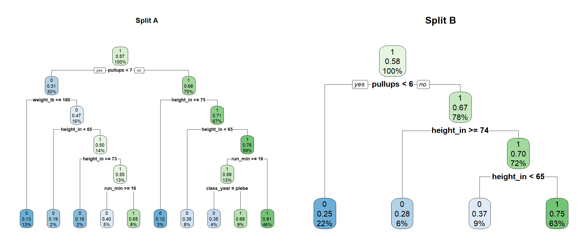
Logistic and every tree, refit on each split, scored on that split’s test set:
trees <- list(`one split` = rpart.control(maxdepth = 1),
`two splits` = rpart.control(maxdepth = 2),
`three splits` = rpart.control(maxdepth = 3),
`no limits` = rpart.control(cp = 0, minsplit = 2),
`limited tree` = rpart.control())
splits <- list(original = list(train = train, test = test), `split A` = split_a, `split B` = split_b)
score_split <- function(m, s) {
tr <- splits[[s]]$train; te <- splits[[s]]$test
pred <- if (m == "logistic") {
fit <- glm(pass ~ ., family = binomial, data = tr)
factor(if_else(predict(fit, te, type = "response") > 0.5, 1, 0), levels = c(0, 1))
} else {
predict(rpart(pass ~ ., data = tr, method = "class", control = trees[[m]]), te, type = "class")
}
f_meas_vec(te$pass, pred, event_level = "second")
}
f1_splits <- expand_grid(model = c("logistic", names(trees)), split = names(splits)) |>
mutate(f_meas = map2_dbl(model, split, score_split))
f1_splits |> pivot_wider(names_from = split, values_from = f_meas)# A tibble: 6 × 4
model original `split A` `split B`
<chr> <dbl> <dbl> <dbl>
1 logistic 0.75 0.759 0.744
2 one split 0.757 0.764 0.760
3 two splits 0.769 0.774 0.778
4 three splits 0.774 0.779 0.791
5 no limits 0.695 0.704 0.709
6 limited tree 0.781 0.793 0.791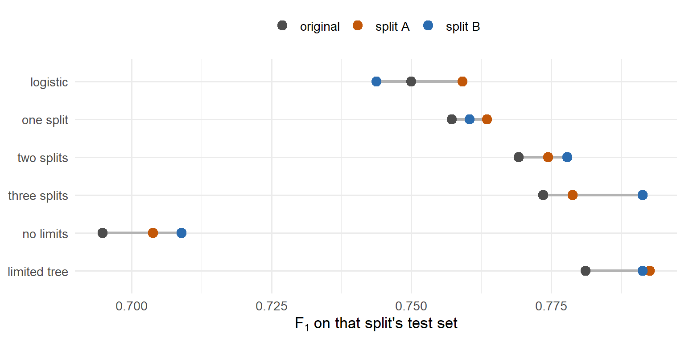
- Same cadets, a slightly different split: a 10-box tree and a 4-box tree.
- The scores move too. Which tree “wins” depends on which cadets landed in
test. - One tree is one noisy opinion.
Random Forest
What if we fit 500 trees?
- Each tree gets its own cadets. A bootstrap sample: 2,100 cadets drawn from
trainwith replacement. Some cadets show up more than once, some not at all. - Each split gets a few predictors. At every split, only a random
mtryof the 6 predictors are available. R’s default: \(\sqrt{6} \approx 2\). - Each tree grows with no limits. Every one overfits its own sample.
- Every tree votes. Each predicts pass or fail for every test cadet. The majority wins.
Why it works:
- One tree is noisy.
- 500 trees that disagree, voting, cancel each other’s noise.
- The random predictors make them disagree. Without them, every tree would split on pull-ups first and look alike.
What else is good about it:
- Finds interactions and thresholds on its own, like one tree.
- More trees never overfit. They only take longer.
- Out-of-bag error: a free estimate of test performance (below).
- No transformations, numeric and categorical predictors mixed, extreme values don’t matter.
What we tune:
ntree: how many trees. Default 500.mtry: how many predictors each split may look at. Default \(\sqrt{p}\).nodesize: the smallest box a tree can make. Default 1, every tree grown all the way.
library(randomForest)
set.seed(376)
fit_rf <- randomForest(pass ~ ., data = train,
ntree = 500, # how many trees
mtry = 2, # predictors each split may look at
nodesize = 1) # smallest box a tree can make
fit_rf
Call:
randomForest(formula = pass ~ ., data = train, ntree = 500, mtry = 2, nodesize = 1)
Type of random forest: classification
Number of trees: 500
No. of variables tried at each split: 2
OOB estimate of error rate: 24.81%
Confusion matrix:
0 1 class.error
0 557 320 0.3648803
1 201 1022 0.1643500- Out-of-bag (OOB). Each bootstrap sample leaves out about a third of the cadets. Score each cadet with only the trees that never saw it: a free test set.
- OOB error 24.8%: what to expect on new cadets, before we touch
test. - The confusion matrix has truth on the rows, the opposite of ours.
results_rf <- test |> mutate(pred = predict(fit_rf, test))
results_rf |> conf_mat(truth = pass, estimate = pred) Truth
Prediction 0 1
0 273 85
1 124 418scoreboard <- scoreboard |>
bind_rows(results_rf |> ioct_metrics(truth = pass, estimate = pred, event_level = "second") |> mutate(model = "forest"))
scoreboard |> select(model, .metric, .estimate) |> pivot_wider(names_from = .metric, values_from = .estimate)# A tibble: 7 × 5
model accuracy sensitivity precision f_meas
<chr> <dbl> <dbl> <dbl> <dbl>
1 logistic 0.702 0.799 0.707 0.75
2 one split 0.692 0.859 0.677 0.757
3 two splits 0.717 0.845 0.706 0.769
4 three splits 0.741 0.791 0.757 0.774
5 no limits 0.662 0.688 0.702 0.695
6 limited tree 0.737 0.841 0.729 0.781
7 forest 0.768 0.831 0.771 0.8 Tuning the Forest
Try every combination of the three knobs. Score each on its OOB predictions. Never touch the test set to tune.
rf_grid <- expand_grid(mtry = 1:6, ntree = c(100, 300, 500), nodesize = c(1, 5, 20)) |>
mutate(oob_f1 = pmap_dbl(list(mtry, ntree, nodesize), \(m, n, k) {
set.seed(376)
rf <- randomForest(pass ~ ., data = train, mtry = m, ntree = n, nodesize = k)
f_meas_vec(train$pass, rf$predicted, event_level = "second") # rf$predicted: the OOB predictions
}))
rf_grid |> arrange(desc(oob_f1))# A tibble: 54 × 4
mtry ntree nodesize oob_f1
<int> <dbl> <dbl> <dbl>
1 1 500 5 0.810
2 1 300 5 0.807
3 1 500 1 0.807
4 1 300 1 0.803
5 1 100 1 0.802
6 2 300 1 0.8
7 1 500 20 0.800
8 3 500 20 0.799
9 1 300 20 0.799
10 2 500 20 0.799
# ℹ 44 more rows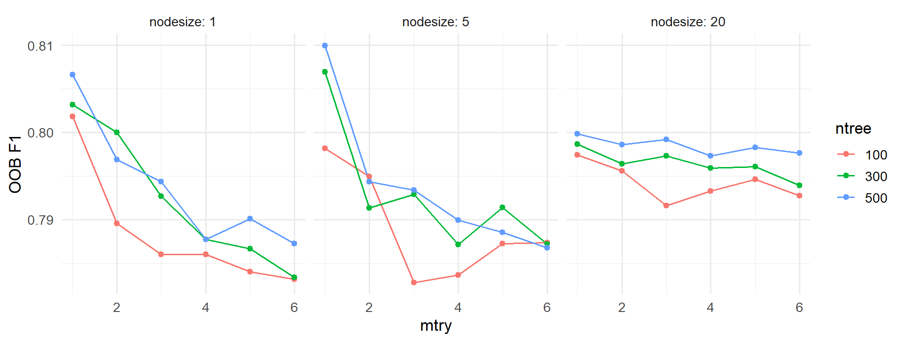
mtrymatters most. Fewer predictors per split, more disagreement between trees.- More trees help a little.
nodesizebarely matters. mtry= 6: every predictor at every split. That is bagging, a forest without the random predictors.
The best combination, refit and scored on test:
best <- rf_grid |> slice_max(oob_f1, n = 1)
best# A tibble: 1 × 4
mtry ntree nodesize oob_f1
<int> <dbl> <dbl> <dbl>
1 1 500 5 0.810set.seed(376)
fit_best <- randomForest(pass ~ ., data = train,
ntree = best$ntree, mtry = best$mtry, nodesize = best$nodesize,
importance = TRUE) # keep variable importance, below
results_best <- test |> mutate(pred = predict(fit_best, test))
scoreboard <- scoreboard |>
bind_rows(results_best |> ioct_metrics(truth = pass, estimate = pred, event_level = "second") |> mutate(model = "tuned forest"))
scoreboard |> select(model, .metric, .estimate) |> pivot_wider(names_from = .metric, values_from = .estimate)# A tibble: 8 × 5
model accuracy sensitivity precision f_meas
<chr> <dbl> <dbl> <dbl> <dbl>
1 logistic 0.702 0.799 0.707 0.75
2 one split 0.692 0.859 0.677 0.757
3 two splits 0.717 0.845 0.706 0.769
4 three splits 0.741 0.791 0.757 0.774
5 no limits 0.662 0.688 0.702 0.695
6 limited tree 0.737 0.841 0.729 0.781
7 forest 0.768 0.831 0.771 0.8
8 tuned forest 0.768 0.859 0.758 0.805The tuned forest has the best \(F_1\) on the page.
So What Do I Make of It?
Logistic regression hands you a coefficient for every predictor: which way it pushes, and how hard.
coef(fit_logit) |> round(3) (Intercept) class_yearfirstie class_yearplebe class_yearyuk
1.613 0.124 -0.309 -0.019
height_in weight_lb pullups run_min
0.024 -0.011 0.137 -0.167
plank_sec
0.001 The forest is 500 trees. No coefficients, no single tree to read. The closest thing is variable importance: scramble one predictor’s values among the out-of-bag cadets and see how much worse the forest gets. A predictor the forest leans on hurts a lot when scrambled. One it ignores doesn’t hurt at all.
importance(fit_best, type = 1) |> # type = 1: the scramble test, mean decrease in accuracy
as_tibble(rownames = "predictor") |>
arrange(desc(MeanDecreaseAccuracy))# A tibble: 6 × 2
predictor MeanDecreaseAccuracy
<chr> <dbl>
1 height_in 50.2
2 pullups 47.8
3 weight_lb 29.9
4 run_min 23.5
5 class_year 3.67
6 plank_sec -2.38varImpPlot(fit_best, type = 1, main = "")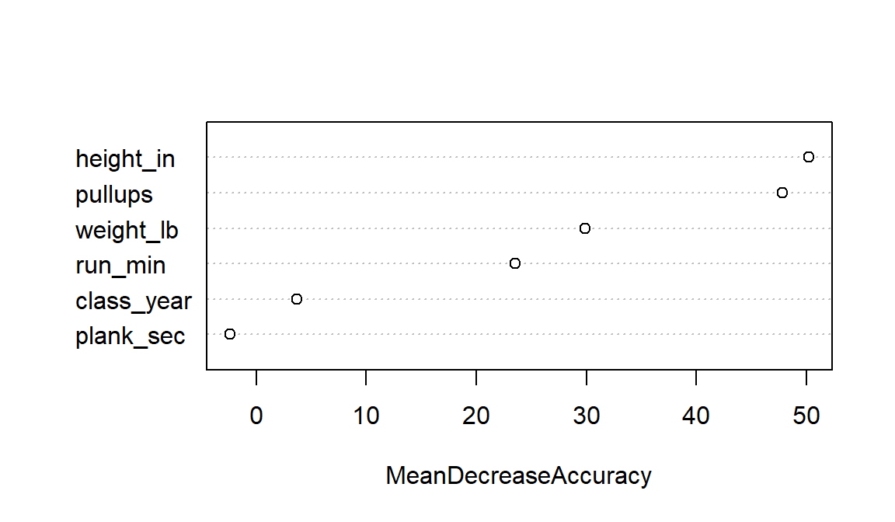
- Height, pull-ups and weight matter most. Scrambling
plank_secchanges nothing. - Importance says the forest uses a predictor. Not which way it pushes, not by how much, and not that it causes passing.
What the Forest Tells Us
- What it predicts: which cadets will pass.
- How well: on cadets it never saw, it found 86% of the cadets who passed, and 76% of the cadets it said would pass did pass.
- What it can’t tell you: why. Importance says which predictors it leans on, not how. For a rule you can say out loud, use the tree: \(F_1\) 0.781 against the forest’s 0.805.
Before Lesson 26
Lesson 26 is the model competition: your team fits logistic regression, mixed-effects logistic regression, and a random forest on the Memo 4 leads, then uploads predictions to a leaderboard.
Come to class with:
- A laptop with
lme4andrandomForestinstalled - Both Memo 4 files downloaded: ma376_leads_m4.csv (12,000 leads, outcomes known) and ma376_leads_score.csv (3,900 incoming, no outcomes)
- The Memo 4 tasking read
- Today’s forest code: you will tune one again, on the leads
I’ll give you starter code for the logistic regression.